STEAK HOUSE ／ 茨城県古河市 横山町
S E N R I
鉄板ひとつを、五十六年。
表通りから一本入ったところに、店を構えております。和牛のリブロース・サーロイン・ヒレを、お客様の目の前の鉄板でお焼きしております。
お昼のお品書きは四千円台から、夜のセット・メニューは五千円台からご用意しております。
お電話は、お昼 11:00〜13:30／夜 17:00〜22:00 のあいだに承っております。
お客様のすぐ前に、一枚の鉄板がございます。焼き加減をお伺いしながらお焼きし、焼き上がったところからお皿へお取りいたします。
席は鉄板を囲むかたちで並んでおります。四名様用と六名様用の個室カウンターもご用意しておりますので、人目を気になさらずお過ごしいただけます。
表通りからは少し奥まっております。入口の牛の印を目印にお越しくださいませ。
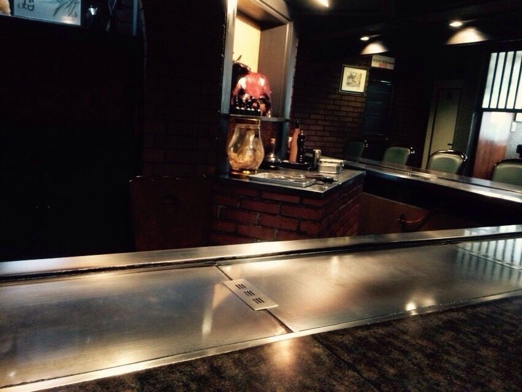
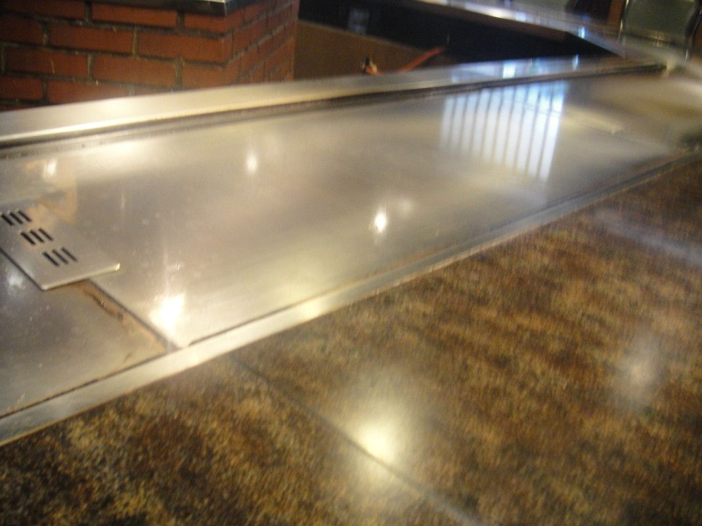
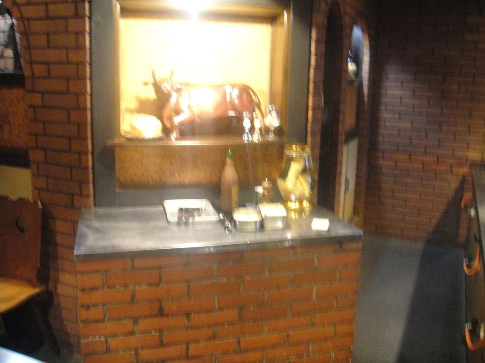
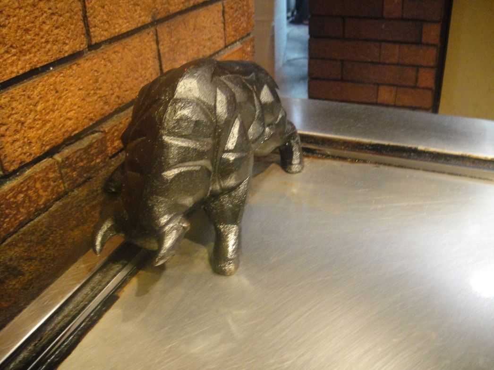
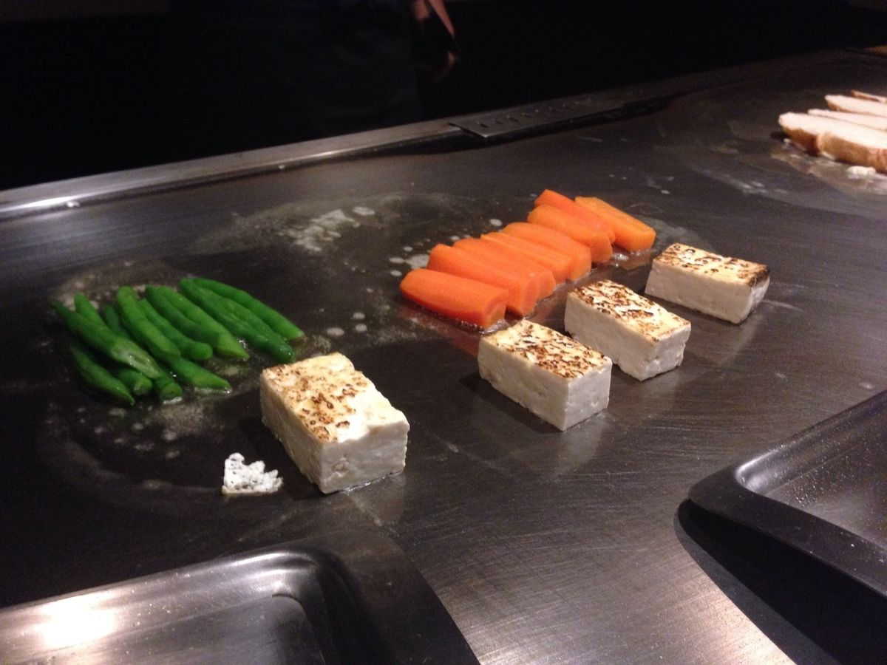
四名様用と六名様用の個室カウンターをご用意しております。ご法要のあとのお席、ご商談、記念日やお祝い事、ご家族のだんらんに、どうぞお使いくださいませ。
個室に収まらないご人数のお席は、貸切にて承っております。ご人数とご予算、お日にちをお電話でお聞かせいただければ、こちらでご相談に乗ります。
お昼は、一組十名様までのお席をご用意しております。
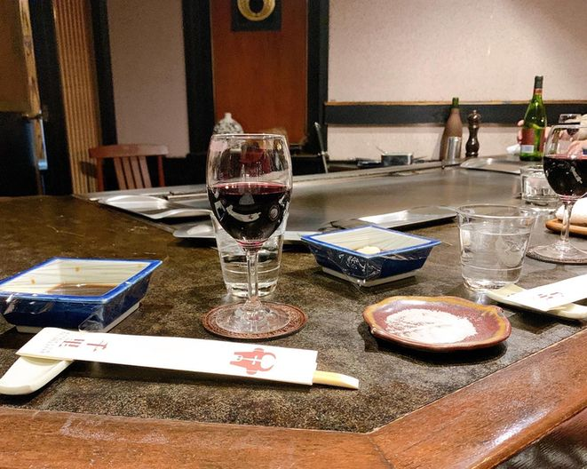
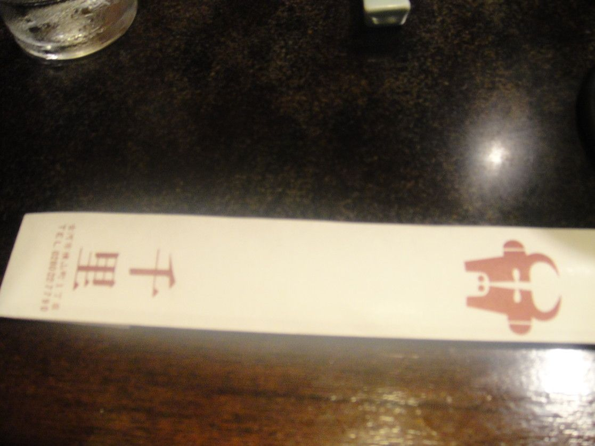
和牛は、リブロース・サーロイン・ヒレの三つからお選びいただけます。グラム数もお選びいただけますので、お腹の具合に合わせてお申しつけくださいませ。
「千里厳選」のヒレは国産の交雑牛でございます。和牛より少しお求めやすいお値段でご用意しております。
和牛ヒレは品薄のため、お品切れの日がございます。あらかじめご了承くださいませ。
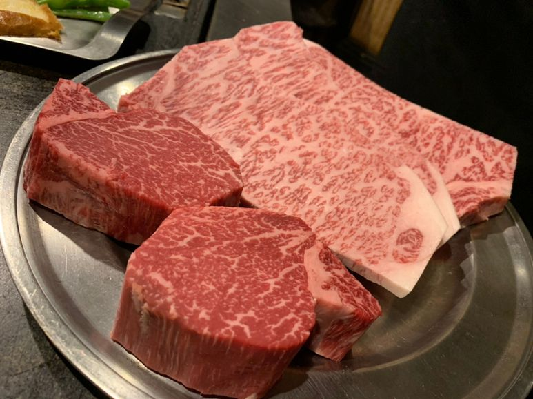
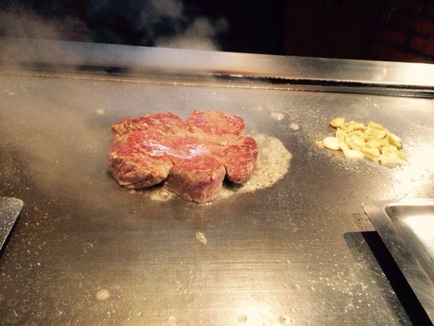
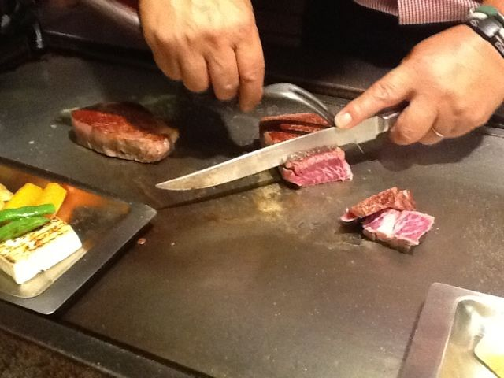
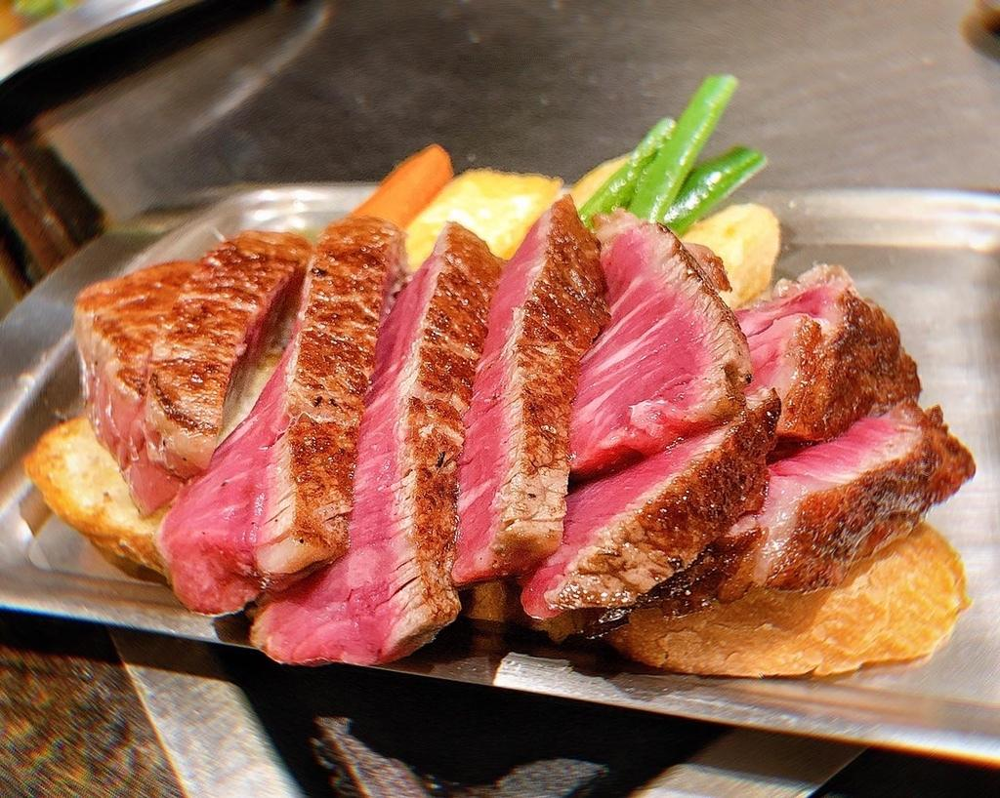
お肉を焼いたものより軽いお料理をお好みのお客様に、しゃぶしゃぶとすき焼きもご用意しております。
ご法要やご親族のお集まりの献立は、ご予算に合わせてお電話でご相談を承ります。お品とお値段も、そのときにお伝えいたします。
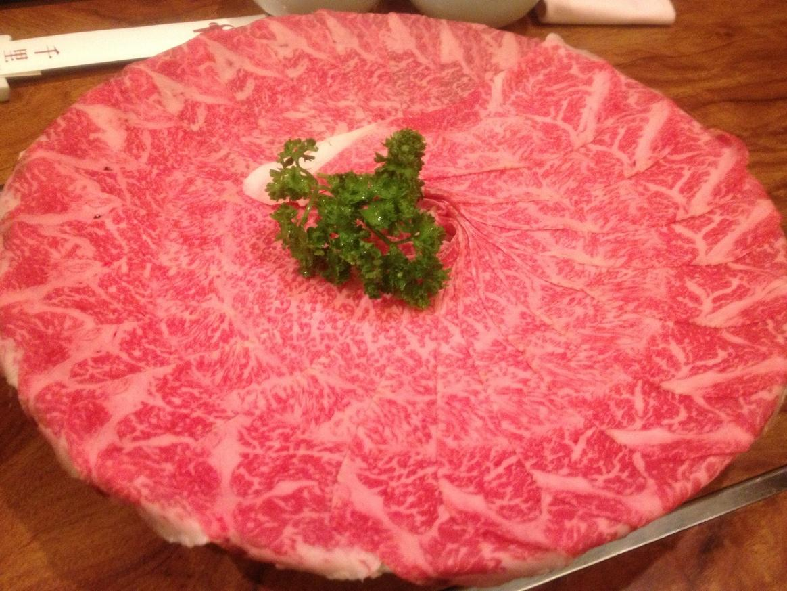
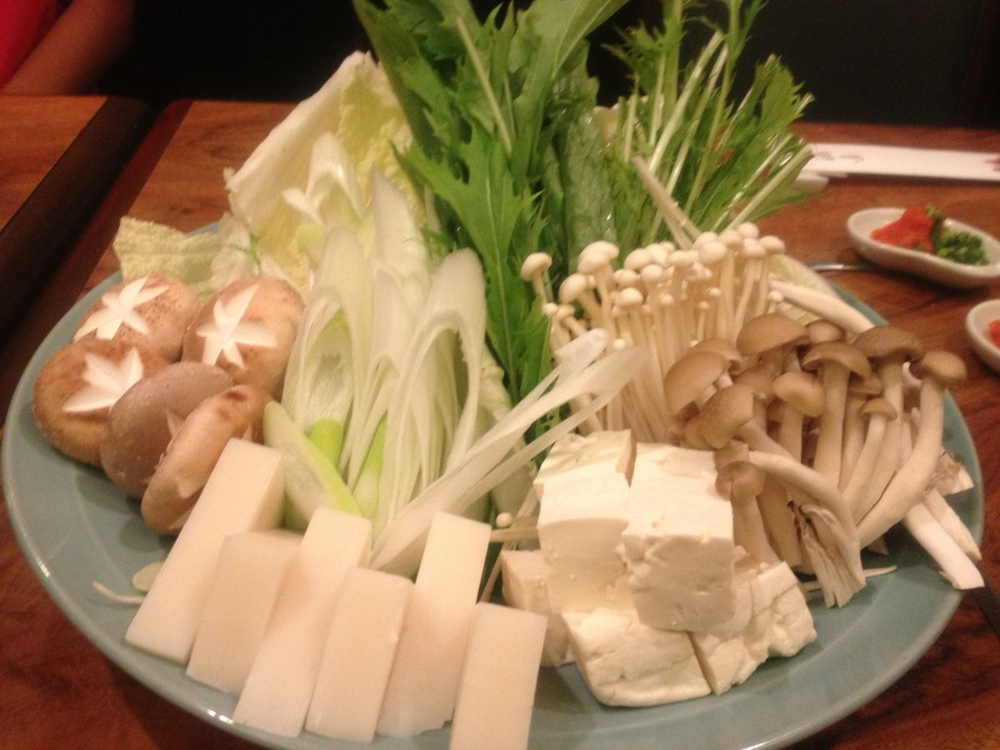
落ち着いた雰囲気の店内で、鉄板で丁寧に焼き上げてくれるステーキが楽しめるお店です。目の前で焼かれるライブ感もありお客様の声より
隠れ家的ロケーションにある名店。6人席で、目の前でお肉を焼いてくれる贅沢が醍醐味お客様の声より
接待する方もされる方も嬉しい料理。全てが改めて絶品！お客様の声より
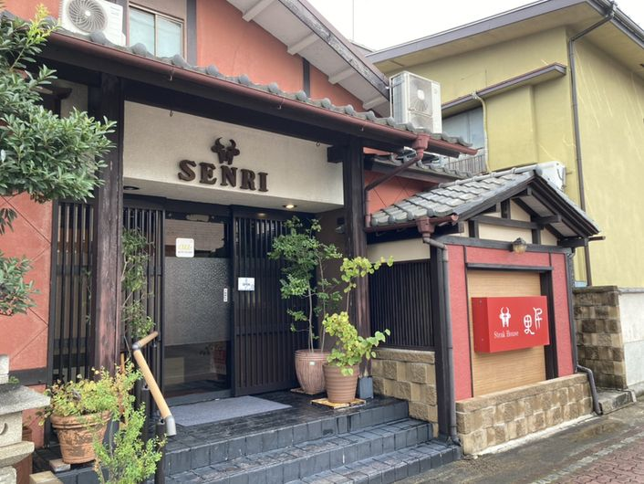
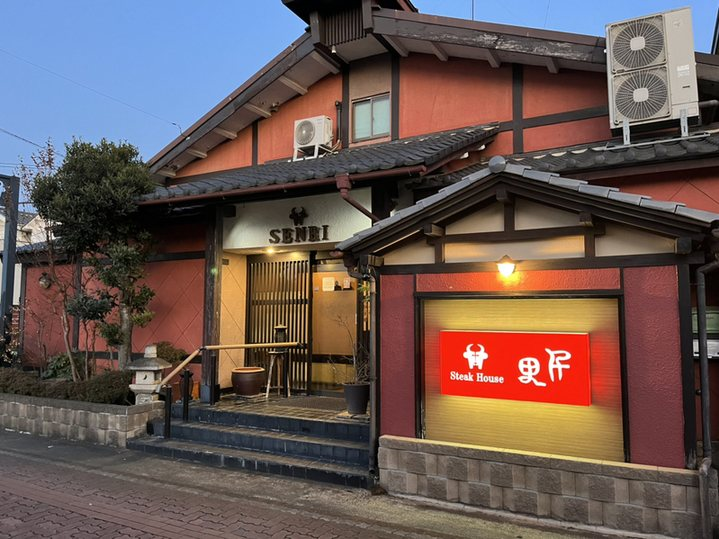
| 住所 | 〒306-0022 茨城県古河市横山町1-4-13 |
|---|---|
| 電話 | 0280-22-7790 |
| 営業時間 | お昼 11:00〜13:30（オーダーストップ 13:30） 夜 17:00〜22:00（ラストオーダー 21:30） 当日の状況により、早めに店を閉めることがございます。 |
| 定休日 | 日曜日、および月曜日（不定期） 月曜日が祝日の場合は営業しております。年末年始はお休みをいただきます。 |
| 個室 | 四名様用・六名様用の個室カウンター／貸切も承ります |
| 駐車場 | 店舗の敷地内に九台（うち一台は軽自動車専用） |
| お支払い | 現金・クレジットカード |
| 最寄り駅 | JR古河駅 西口より徒歩約10分 |
地図が表示されないときは、Googleマップで道順を見る（別の画面で開きます）。